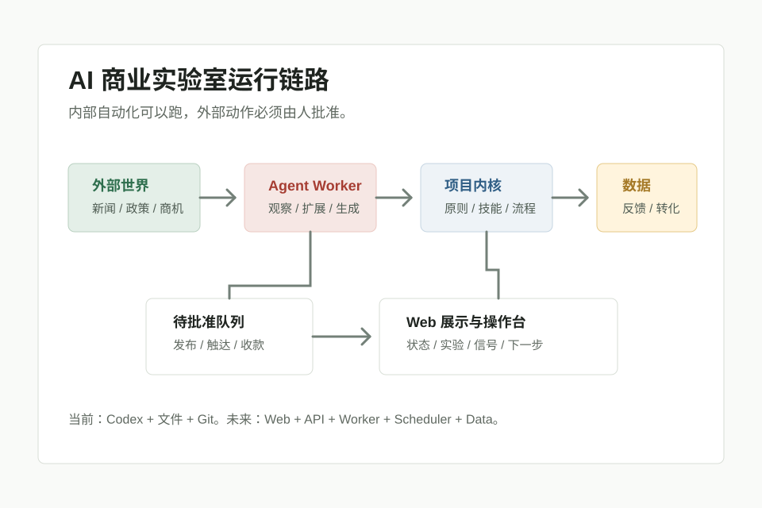

实验 004
高考后本地消费营销包
围绕考后释放、录取庆祝、暑期学车、毕业写真和入学准备， 为北京本地商家制作 7 天获客包。
查看实验包Runtime
当前由 Codex、本地文件和 Git 驱动；后期会升级为 Web、API、Worker、Scheduler 和数据层。

Agent 先读规则、原则、技能、方法和当前实验。
从信号雷达进入机会扩展、实验设计、报价、候选搜集和复盘。
所有报告、实验、候选、反馈和复盘都沉淀为文件或结构化数据。
发布、联系客户、花钱、收款和承诺收益必须由人批准。
Active Experiment
实验 004
围绕考后释放、录取庆祝、暑期学车、毕业写真和入学准备， 为北京本地商家制作 7 天获客包。
查看实验包买家
餐饮、摄影写真、驾校、升学宴、数码零售和本地体验店。
报价
先用轻量服务验证是否有人愿意为 AI 辅助营销材料付费。
边界
候选、话术、报价可以准备；真实商家触达必须等待批准。
Structure
原则、方法、技能、评分、协议和人工批准边界。
每日雷达、机会扩展、实验设计、验证和复盘。
每个商业机会都必须通过小实验获得反馈或收入证据。
Web、API、Worker、Scheduler、数据层和 Git 记录。
Language
项目已转为中文优先，但早期深度调研和 AI Opportunity Radar 相关文件仍有英文残留。 展示页、项目结构、运行时、当前实验和运营原则从现在开始默认中文。